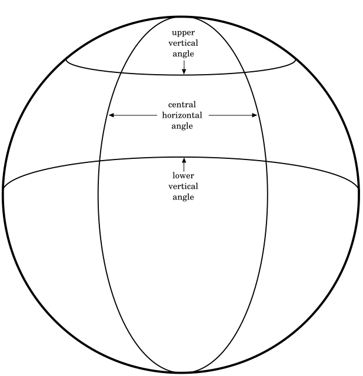

1. Introduction
The spec adds support of `composition` layers to the WebXR spec. The benefits of layers are as follows:
-
Performance and judder Composition layers are presented at the frame rate of the compositor (i.e. native refresh rate of HMD) rather than at the application frame rate. Even when the application is not updating the layer’s rendering at the native refresh rate of the compositor, the compositor might be able to re-project the existing rendering to the proper pose. This results in smoother rendering and less judder. Another feature of layers is that each of them can have different resolution. This allows the application to scale down the main eye buffer resolution on low performance systems, but keeping essential information, such as text or a map, in its own layer at a higher resolution.
-
Legibility/visual fidelity The resolution for eye-buffers for 3D world rendering can be set to relatively low values especially on low performance systems. It would be impossible to render high fidelity content, such as text, in this case. Each layer may have its own resolution and it will be re-sampled only once by the compositor (in contrary to the traditional approach with rendering layers via WebGL where the layer’s content got re-sampled at least twice: once when rendering into WebGL eye-buffer (and losing a lot of details due to limited eye-buffer resolution) and the second time by the compositor).
-
Power consumption / battery life Due to reduced rendering pipeline, the lack of double sampling and no need to update the layer’s rendering each frame, the power consumption is expected to be improved.
-
Latency Pose sampling for composition layers may occur at the very end of the frame and then certain reprojection techniques could be used to update the layer’s pose to match it with the most recent HMD pose. This may significantly reduce the effective latency for the layers' rendering and as a result improve overall experience.
1.1. Terminology
1.2. Application flow
If an author wants to use GL layers, they have to go through these steps:
-
For any layer type other than
XRProjectionLayerrequest support throughrequiredFeaturesoroptionalFeaturesinrequestSession(). -
Create a
XRWebGLBindingorXRMediaBinding. -
Create layers with these objects.
-
Add the layers to
XRRenderStateInitand callupdateRenderState(). -
During
requestAnimationFrame()for webgl layers, draw content each WebGL layer.
2. Initialization
If an application wants to create layers other than of type XRProjectionLayer during a session,
the session MUST be requested with an appropriate feature descriptor. The string "layers" is introduced
by this module as a new valid feature descriptor for the WebXR Layers feature.
Layers of type XRProjectionLayer MUST always be supported, regardless if the feature descriptor was requested.
navigator. xr. requestSession( 'immersive-vr' , { optionalFeatures: [ 'layers' ] }
Layers are only supported for XRSessions created with XRSessionMode of "immersive-vr" or "immersive-ar". "inline" sessions MUST not support layers.
The "layers" feature descriptor has a feature requirement that it cannot be enabled when there is an active immersive session.
NOTE: This means that executing the request(permissionDesc) API with "layers" will
not enable layers support for the current active session.
3. Layer types
3.1. Mono and stereo layers
A stereo layer MUST supply a differentXRSubImage to render to for each view.
A mono layer MUST supply a single XRSubImage which is shown to each view.
The XR Compositor MUST ensure that layers are presented correctly in stereo to the observer.
3.2. XRLayerLayout
TheXRLayerLayout enum defines the layout of the layer.
enum {XRLayerLayout "mono" ,"stereo" ,"stereo-left-right" ,"stereo-top-bottom" };
-
A layout of
monoindicates that the layer is mono. -
A layout of
stereoindicates that the layer is in stereo. It’s left to the user agent what layout to use. -
A layout of
stereo-left-rightindicates that the layer is in stereo and divided left to right. -
A layout of
stereo-top-bottomindicates that the layer is in stereo and divided top to bottom.
NOTE: If an XRCompositionLayer is created with an "stereo" layout, it is highly recommended that it is allocated with an "texture-array" texture type.
3.3. XRCompositionLayer
XRCompositionLayer defines a set of common attributes and behaviors across certain layer types.interface :XRCompositionLayer XRLayer {readonly attribute XRLayerLayout layout ;attribute boolean blendTextureSourceAlpha ;attribute boolean ?chromaticAberrationCorrection ;attribute float ?fixedFoveation ;readonly attribute boolean needsRedraw ;void (); };destroy
The layout attribute returns the layout of the layer.
The blendTextureSourceAlpha attribute enables the layer’s texture alpha channel.
The chromaticAberrationCorrection attribute is a hint for the XR Compositor to
enable optical chromatic aberration correction for the layer. If the user agent or device does not support this attribute, they
should return null on getting, and setting should be a no-op.
The fixedFoveation attribute controls the amount of foveation used by the XR Compositor. If the user agent or device does not support this attribute, they
should return null on getting, and setting should be a no-op.
Setting fixedFoveation to a value less than 0 will set it to 0 and setting it to
a value higher than 1 will set it to 1. 0 sets the minimum amount of foveation while 1 set the maximum. It is up to the user agent how the XR Compositor interprets these values.
The needsRedraw attribute signals that the XRCompositionLayer should be
rerendered in the next XR animation frame. It MAY be set when the underlying resources of a layer are lost or
when the XR Compositor can no longer reproject the layer. Failing to redraw the content in the next XR animation frame might cause flickering or other side effects.
XRCompositionLayer layer,
the user agent MUST run the following steps:
-
Set layer’s
needsRedrawtotrue. -
If layer is not a
XRProjectionLayer, queue a task to fire an event namedredrawon layer.
destroy() will delete the underlying attachments. If there are no attachments, this function does nothing.
To intialize a composition layer with a XRSession session and an optional instance of a WebGLRenderingContext or a WebGL2RenderingContext context, the user agent MUST run the following steps:
-
Set this
blendTextureSourceAlphatotrue. -
Initialize this
chromaticAberrationCorrectionas follows:- If the user agent supports chromatic aberration correction
- Set this
chromaticAberrationCorrectiontotrueorfalsedepending on the user agent’s preference. - Otherwise
- Set this
chromaticAberrationCorrectiontonull.
-
Initialize this
fixedFoveationas follows:- If the user agent supports fixed foveation
- Set this
fixedFoveationto a value between0and1depending on the user agent’s preference. - Otherwise
- Set this
fixedFoveationtonull.
When calling destroy(), the user agent MUST run the following steps:
-
Set this colorTextures array to an empty array.
-
Set this depthStencilTextures array to an empty array.
-
Destroy the underlying GL attachments.
Each XRCompositionLayer has a context object which is an instance
of either null or a WebGLRenderingContext or a WebGL2RenderingContext and a media object which is an instance of null or a HTMLVideoElement.
Each XRCompositionLayer has an associated session, which is the XRSession it was created with.
When setting the space on a layer with XRSpace space and XRCompositionLayer layer, the user agent MUST run the following steps to validate if the space is valid:
XRCompositionLayer has an internal boolean isStatic that indicates that the author can only draw
to this layer when needsRedraw is true.
NOTE: if isStatic is true the author can only draw into the layer once after creation or once after
a redraw event. This allows the UA to only allocate a single GPU buffer.
3.4. XRProjectionLayer
AnXRProjectionLayer is a layer that fills the entire view of the observer.
Projection layers should be refreshed close to the device’s native frame rate.
interface :XRProjectionLayer XRCompositionLayer {readonly attribute boolean ignoreDepthValues ; };
The ignoreDepthValues attribute, if true, indicates that the XR Compositor MUST NOT make use of values in the depth buffer attachment when rendering. When the attribute
is false it indicates that the content of the depth buffer attachment will be used by the XR Compositor and is expected to be representative of the scene rendered into the layer.
3.5. XRQuadLayer
AnXRQuadLayer renders a layer that takes up a flat rectangular space in the virtual environment.
Only the front of the layer MUST be visible; the back face MUST not be drawn by the XR Compositor.
A XRQuadLayer has no thicknes. It is a two-dimensional object positioned and oriented in 3D space. The position of a quad refers to the center of the quad.
interface :XRQuadLayer XRCompositionLayer {attribute XRSpace space ;attribute XRRigidTransform transform ;attribute float width ;attribute float height ; // Eventsattribute EventHandler onredraw ; };
The transform attributes sets and returns the offset and orientation relative to the space attribute. The transform and space attributes
establish the spatial relationship of the layer within the user’s physical environment.
When setting the space, first run the steps for setting the space on a layer.
The width and height attributes
set and return the width and height of the layer in meters.
XRQuadLayer layer with a XRQuadLayerInit init, the user agent MUST run the following steps:
-
Initialize layer’s
transformas follows:- If init’s
transformis set - Let layer’s
transformbe a newXRRigidTransformin the relevant realm of layer initialized withpositionandorientationof init’stransform. - Otherwise
- Let layer’s
transformbe a newXRRigidTransformin the relevant realm of layer initialized with aDOMPointInitposition of{ x: 0.0, y: 0.0, z: 0.0, w: 1.0 }.
- If init’s
The onredraw attribute is an Event handler IDL attribute for the redraw event type.
3.6. XRCylinderLayer
AnXRCylinderLayer renders a layer that takes up a curved rectangular space in the virtual environment.
Only the front of the layer MUST be visible; the back face MUST not be drawn by the XR Compositor.
A XRCylinderLayer has no thicknes. It is a two-dimensional object positioned and oriented in 3D space. The position of the cylinder refers to the center of the quad.
interface :XRCylinderLayer XRCompositionLayer {attribute XRSpace space ;attribute XRRigidTransform transform ;attribute float radius ;attribute float centralAngle ;attribute float aspectRatio ; // Eventsattribute EventHandler onredraw ; };
The transform attribute sets and returns the offset and orientation relative to the space attribute. The transform and space attributes
establish the spatial relationship of the layer within the user’s physical environment.
When setting the space, first run the steps for setting the space on a layer.
The radius attribute controls the radius in meters of the cylinder.
The centralAngle attribute controls the angle in radians of the visible section of the cylinder.
It grows symmetrically around the 0 angle.
The aspectRatio attribute controls the ratio of the visible cylinder section.

XRCylinderLayer layer with a XRCylinderLayerInit init, the user agent MUST run the following steps:
-
Initialize layer’s
centralAngleto init’scentralAngle. -
Initialize layer’s
aspectRatioto init’saspectRatio. -
Initialize layer’s
transformas follows:- If init’s
transformis set - Let layer’s
transformbe a newXRRigidTransformin the relevant realm of layer initialized withpositionandorientationof init’stransform. - Otherwise
- Let layer’s
transformbe a newXRRigidTransformin the relevant realm of layer initialized with aDOMPointInitposition of{ x: 0.0, y: 0.0, z: 0.0, w: 1.0 }.
- If init’s
The onredraw attribute is an Event handler IDL attribute for the redraw event type.
3.7. XREquirectLayer
AnXREquirectLayer renders a layer where the XR Compositor MUST map an equirectangular coded data onto the inside of a sphere.
this section needs clarification
interface :XREquirectLayer XRCompositionLayer {attribute XRSpace ;space attribute XRRigidTransform transform ;attribute float radius ;attribute float centralHorizontalAngle ;attribute float upperVerticalAngle ;attribute float lowerVerticalAngle ; // Eventsattribute EventHandler onredraw ; };
The transform attribute sets and returns the offset and orientation relative to space. The transform attribute and the space establish the spatial relationship of the layer within the user’s physical environment.
The radius attribute is the non-negative radius in meters of the sphere. Values of zero or infinity are treated as an infinite sphere.
Setting radius to a value less than 0 will set it to 0.
The centralHorizontalAngle, upperVerticalAngle and lowerVerticalAngle attributes set and return how the texture is mapped to the sphere.
Setting centralHorizontalAngle to a value less than 0 will set it to 0 and setting it to
a value higher than 2π will set it to 2π.
Setting upperVerticalAngle or lowerVerticalAngle to a value less than -π/2 will set it
to -π/2 and setting it to a value higher than π/2 will set it to π/2.

When assigning an XRSpace to the space attribute, first run the following steps.
When setting the space on an equirect layer with XRSpace space and XREquirectLayer layer, the user agent MUST run the following steps to validate if the space is valid:
-
If init’s
spaceis not an instance of typeXRReferenceSpace, throwTypeErrorand abort these steps. -
If init’s
spacehas a type of"viewer", throwTypeErrorand abort these steps. -
Run setting the space on a layer with space and layer.
XREquirectLayer layer with a XREquirectLayerInit init, the user agent MUST run the following steps:
-
Initialize layer’s
centralHorizontalAngleto init’scentralHorizontalAngle. -
Initialize layer’s
upperVerticalAngleto init’supperVerticalAngle. -
Initialize layer’s
lowerVerticalAngleto init’slowerVerticalAngle. -
Initialize layer’s
transformas follows:- If init’s
transformis set - Let layer’s
transformbe a newXRRigidTransformin the relevant realm of layer initialized withpositionandorientationof init’stransform. - Otherwise
- Let layer’s
transformbe a newXRRigidTransformin the relevant realm of layer.
- If init’s
The onredraw attribute is an Event handler IDL attribute for the redraw event type.
3.8. XRCubeLayer
AXRCubeLayer renders a layer where the XR Compositor renders directly from a cubemap.
this section needs clarification
interface :XRCubeLayer XRCompositionLayer {attribute XRSpace space ;attribute DOMPointReadOnly orientation ; // Eventsattribute EventHandler onredraw ; };
The orientation attribute sets and returns the orientation relative to the space attribute. The orientation and space attributes
establish the spatial relationship of the layer within the user’s physical environment.
When placing the XRCubeLayer only the orientation of the space is considered. The cube layer will always be rendered
with the view point at the center.
When assigning an XRSpace to the space attribute, first run the following steps.
When setting the space on an cube layer with XRSpace space and XRCubeLayer layer, the user agent MUST run the following steps to validate if the space is valid:
-
If init’s
spaceis not an instance of typeXRReferenceSpace, throwTypeErrorand abort these steps. -
If init’s
spacehas a type of"viewer", throwTypeErrorand abort these steps. -
Run setting the space on a layer with space and layer.
The onredraw attribute is an Event handler IDL attribute for the redraw event type.
4. Spaces
XRProjectionLayer and XRWebGLLayer don’t have associated an XRSpace because they render to the full frame.
XRCubeLayer and XREquirectLayer MUST only support XRReferenceSpaces that are not of type "viewer".
XRQuadLayer and XRCylinderLayer MUST support all XRSpace types.
Generally, developers should not use of "viewer" space to stabilize layers, as this will almost always defeat positional or
rotational reprojection and result in a loss in stability of the rendered content relative to the world. The exception being small UI elements
like a gaze cursor or targeting reticle.
Following are some best practices of spaces to use with a layer type:
-
XRQuadLayerwith"viewer"space: Head-locked constant-size reticle in center of screen. -
XRQuadLayerorXRCylinderLayerin"local","unbounded"space: springy body-locked UI. -
XRQuadLayerorXRCylinderLayerin"local","local-floor","unbounded","bounded-floor"or anchor space: world-locked video, placed by the user. -
XREquirectLayerorXRCubeLayerin"local"space: 360-degree video or skybox.
5. Rendering
5.1. XRSubImage
TheXRSubImage object represents what viewport of the GPU texture to use.
interface { [XRSubImage SameObject ]readonly attribute XRViewport viewport ; };
NOTE: this class is designed to accomodate future extensions
The viewport attribute returns the XRViewport to use when rendering the sub image.
5.2. XRWebGLSubImage
TheXRWebGLSubImage object is used during rendering of the layer.
interface :XRWebGLSubImage XRSubImage { [SameObject ]readonly attribute WebGLTexture colorTexture ; [SameObject ]readonly attribute WebGLTexture ?depthStencilTexture ;readonly attribute unsigned long ?imageIndex ;readonly attribute unsigned long textureWidth ;readonly attribute unsigned long textureHeight ; };
The colorTexture attribute returns the color WebGLTexture for the XRCompositionLayer.
The depthStencilTexture attribute returns the depth/stencil WebGLTexture for the XRCompositionLayer.
If the layer was created without depth/stencil, this attribute returns null.
The imageIndex attribute returns the offset into the texture array. Valid only for layers
that were requested with texture-array.
The colorTexture and depthStencilTexture objects MUST only be used during the XR animation frame of the
current session and MUST be made invalid once the XR animation frame completes.
NOTE: the colorTexture and depthStencilTexture objects are allocated when the layer is contructed using the allocate color textures and allocate depth textures algoritms. The side effect of this pre-allocation is that calling getSubImage() and getViewSubImage() with the same parameters will always return the same texture objects.
In addition, they MUST behave as though they were allocated with texStorage2D or texStorage3D, as appropriate, even when using a WebGL 1.0 context.
NOTE: Changes to the dimensions or format of the colorTexture or depthStencilTexture objects are not allowed. GL commands
may only alter the texel values and texture parameters. Using any of the following
commands with the WebGLTexture will result in an INVALID_OPERATION error
being generated, even if it does not affect the dimensions or format: TexImage*, CompressedTexImage*, CopyTexImage* and TexStorage*.
The "Immutable-Format Texture Images" section in the OpenGL ES 3.0 spec defines these limitations in more detail.
The textureWidth and textureHeight attributes
return the width and height in pixels of the GL attachments, respectively.
5.3. XRTextureType
TheXRTextureType enum defines what type of texture is allocated.
enum {XRTextureType "texture" ,"texture-array" };
-
A texture type of
textureindicates that the textures ofXRWebGLSubImagemust be of typeTEXTURE_2D -
A texture type of
texture-arrayindicates that the textures ofXRWebGLSubImagemust be of typeTEXTURE_2D_ARRAY
6. GPU layer and view creation
6.1. Overview
When a layer is created it is backed by a GPU resource, typically a texture, provided by one of the Web platform’s graphics APIs. In order to
specify which API is providing the layer’s GPU resources a XRWebGLBinding for the API in question must be created.
Each graphics API may have unique requirements that must be satisfied before a context can be used in the creation of a layer. For example,
a WebGLRenderingContext must have its xrCompatible flag set prior to being passed to the constructor of the XRWebGLBinding instance.
Any interaction between the XRSession the graphics API, such as allocating or retrieving textures, will go through this XRWebGLBinding instance, and the exact mechanics
of the interaction will typically be API specific. This allows the rest of the WebXR API to be
graphics API agnostic and more easily adapt to future advances in rendering techniques.
Once a XRWebGLBinding instance has been acquired, it can be used to create a variety of XRCompositionLayer. Any layers created by that instance will then be able
to query the associated GPU resources each frame, generally expected to be the native API’s texture interface.
The various layer types are created with the create____Layer series of methods on the XRWebGLBinding instance. Information about the graphics resources required,
such as whether or not to allocate a depth buffer or alpha channel, are passed in at layer creation time and will be immutable for the lifetime of the layer.
The method will return the associated XRCompositionLayer type.
Some layer types may not be supported by the XRSession. If a layer type isn’t supported the method will throw an exception. XRProjectionLayer MUST be supported by all XRSessions.
6.2. XRProjectionLayerInit
TheXRProjectionLayerInit dictionary represents a set of configurable values that describe how a XRProjectionLayer is initialized.
dictionary {XRProjectionLayerInit boolean depth =true ;boolean stencil =false ;boolean alpha =true ;double scaleFactor = 1.0; };
The depth attribute defines if the XRProjectionLayer will have a depth buffer.
The stencil attribute defines if the XRProjectionLayer will have a stencil buffer.
The alpha attribute defines if the XRProjectionLayer will have an alpha channel.
The scaleFactor attribute defines the value that the session’s recommended WebGL framebuffer resolution must be multiplied by determining the resolution of the layer’s attachments.
6.3. XRLayerInit
TheXRLayerInit dictionary represents a set of common configurable values for XRQuadLayer, XRCylinderLayer, XREquirectLayer and XRCubeLayer .
dictionary {XRLayerInit required XRSpace space ;required unsigned long viewPixelWidth ;required unsigned long viewPixelHeight ;XRLayerLayout layout = "mono";boolean depth =false ;boolean stencil =false ;boolean alpha =true ; };
The space attribute defines the spatial relationship with the user’s physical environment.
The viewPixelWidth and viewPixelHeight attributes define
the rectangular dimensions of the XRCompositionLayer.
The layout attribute defines the layout of the layer.
The depth attribute defines if the XRCompositionLayer view will have a depth buffer.
The stencil attribute defines if the XRCompositionLayer view will have a stencil buffer.
The alpha attribute defines if the XRCompositionLayer view will have an alpha channel.
6.4. XRQuadLayerInit
The XRQuadLayerInit dictionary represents a set of configurable values that describe how a XRQuadLayer is initialized.
dictionary :XRQuadLayerInit XRLayerInit {XRRigidTransform ?;transform float = 1.0;width float = 1.0;height boolean =isStatic false ; };
6.5. XRCylinderLayerInit
The XRCylinderLayerInit dictionary represents a set of configurable values that describe how a XRCylinderLayer is initialized.
dictionary :XRCylinderLayerInit XRLayerInit {XRRigidTransform ?;transform float = 2.0;radius float = 0.78539;centralAngle float = 2.0;aspectRatio boolean =isStatic false ; };
The default value of centralAngle is π / 4.
6.6. XREquirectLayerInit
The XREquirectLayerInit dictionary represents a set of configurable values that describe how a XREquirectLayer is initialized.
dictionary :XREquirectLayerInit XRLayerInit {XRRigidTransform ?;transform float = 0;radius float = 6.28318;centralHorizontalAngle float = 1.570795;upperVerticalAngle float = -1.570795;lowerVerticalAngle boolean =isStatic false ; };
The default value of centralHorizontalAngle is 2π.
The default value of upperVerticalAngle is π/2.
The default value of lowerVerticalAngle is -π/2.
6.7. XRCubeLayerInit
The XRCubeLayerInit dictionary represents a set of configurable values that describe how a XRCubeLayer is initialized.
dictionary :XRCubeLayerInit XRLayerInit {DOMPointReadOnly ?;orientation boolean =isStatic false ; };
6.8. XRWebGLBinding
TheXRWebGLBinding object is used to create layers that have a GPU backend.
interface {XRWebGLBinding constructor (XRSession ,session XRWebGLRenderingContext );context readonly attribute double ;nativeProjectionScaleFactor XRProjectionLayer createProjectionLayer (XRTextureType ,textureType optional XRProjectionLayerInit );init XRQuadLayer createQuadLayer (XRTextureType ,textureType optional XRQuadLayerInit );init XRCylinderLayer createCylinderLayer (XRTextureType ,textureType optional XRCylinderLayerInit );init XREquirectLayer createEquirectLayer (XRTextureType ,textureType optional XREquirectLayerInit );init XRCubeLayer createCubeLayer (optional XRCubeLayerInit );init XRWebGLSubImage getSubImage (XRCompositionLayer ,layer XRFrame );frame XRWebGLSubImage getViewSubImage (XRCompositionLayer ,layer XRView ); };view
the init dictionaries shouldn’t be optional. This is bikeshed issue 1566.
Each XRWebGLBinding has a context object of type XRWebGLRenderingContext which is an instance
of either a WebGLRenderingContext or a WebGL2RenderingContext.
Each XRWebGLBinding has an associated session, which is the XRSession it was created with.
NOTE: It is possible to create more than one XRWebGLBinding. Any layer created with an instance of XRWebGLBinding can
be used with another instance of XRWebGLBinding as long as both were created with the same session and the same context. The lifetime of layers or instances of XRWebGLSubImage is not tied to the lifetime of the XRWebGLBinding that created them.
Each XRCompositionLayer created through XRWebGLBinding has an internal colorTextures array which is an array of WebGLTexture for color textures and
an internal depthStencilTextures which is an array of WebGLTexture for depth/stencil textures.
The XRWebGLBinding(session, context) constructor
MUST perform the following steps when invoked:
-
Let binding be a new
XRWebGLBindingin the relevant realm of session. -
If session’s ended value is
true, throw anInvalidStateErrorand abort these steps. -
If context is lost, throw an
InvalidStateErrorand abort these steps. -
If session is not an immersive session, throw an
InvalidStateErrorand abort these steps. -
If context’s XR compatible boolean is
false, throw anInvalidStateErrorand abort these steps. -
Initialize binding’s context to context.
-
Initialize binding’s session to session.
-
Return binding.
The nativeProjectionScaleFactor function returns the value that the session’s recommended WebGL framebuffer resolution MUST be multiplied by to yield the session’s native WebGL framebuffer resolution.
To determine the layout attribute using a XRTextureType textureType, a XRWebGLRenderingContext context and a XRLayerInit init, the user agent MUST run the following steps:
-
If context is not a
WebGL2RenderingContextand textureType is"texture-array", throwTypeErrorand abort these steps. -
let layout be init’s
layout. -
If layout is
"mono", return layout and abort these steps. -
If layout is
"stereo", run the following steps:-
If textureType is
"texture-array", return layout and abort these steps. -
If the user agent prefers
"stereo-left-right"layout, return"stereo-left-right"and abort these steps. -
If the user agent prefers
"stereo-top-bottom"layout, return"stereo-top-bottom"and abort these steps.
-
-
If textureType is
"texture-array", throwTypeErrorand abort these steps. -
return layout.
special case UA behavior if the size causes the layout to change (ie if the requested width exceeds a limit with "stereo-left-right")
To allocate color textures using a XRCompositionLayer layer, a XRTextureType textureType and a XRLayerInit init, the user agent MUST run the following steps:
-
let array be a new array in the relevant realm of context.
-
let context be layer’s context.
-
- If textureType is
"texture-array": - Initialize array with 1 new instance of
WebGLTexturein the relevant realm of this context created as aTEXTURE_2D_ARRAYtexture with 1 internal texture using context and init’salpha,viewPixelWidthandviewPixelHeightvalues. - Otherwise
-
Initialize array with 1 new instance of
WebGLTexturein the relevant realm of context created as aTEXTURE_2Dtexture with context and init’salpha,viewPixelWidthandviewPixelHeightvalues.
- If textureType is
-
let numViews be the number of all the session’s
XRViews. -
- If textureType is
"texture-array": - Initialize array with 1 new instance of
WebGLTexturein the relevant realm of context created as aTEXTURE_2D_ARRAYtexture with numViews internal textures using context and init’salpha,viewPixelWidthandviewPixelHeightvalues.- Return array and abort these steps.
- Otherwise
- Initialize array with numViews new instances of
WebGLTexturein the relevant realm of context created as aTEXTURE_2Dtexture with context and init’salpha,viewPixelWidthandviewPixelHeightvalues.- Return array and abort these steps.
- If textureType is
-
If layer’s
layoutisstereo-left-right, initialize array with 1 new instance ofWebGLTexturein the relevant realm of context created as aTEXTURE_2Dtexture using context and init’salpha, double ofviewPixelWidthandviewPixelHeightvalues. -
If layer’s
layoutisstereo-top-bottom, initialize array with 1 new instance ofWebGLTexturein the relevant realm of context created as aTEXTURE_2Dtexture using context and init’salpha,viewPixelWidthand double ofviewPixelHeightvalues. -
return array.
To allocate depth textures using a XRCompositionLayer layer, a XRTextureType textureType and a XRLayerInit init, the user agent MUST run the following steps:
-
let array be a new array in the relevant realm of context.
-
let context be layer’s context.
-
If init’s
depthandstencilare not set, return array and abort these steps. -
let depthsupport be true if context is a
WebGL2RenderingContextor theWEBGL_depth_textureextension is enabled in context. -
If init’s
depthorstencilare set and depthsupport is false, throwTypeErrorand abort these steps. -
let numViews be the number of all the session’s
XRViews. -
- If textureType is
"texture-array": - Initialize array with 1 new instance of
WebGLTexturein the relevant realm of context created as aTEXTURE_2D_ARRAYtexture with 1 internal texture using context and init’sstencil,viewPixelWidthandviewPixelHeightvalues. - Otherwise
- Initialize array with 1 new instance of
WebGLTexturein the relevant realm of context created as aTEXTURE_2Dtexture with context and init’sstencil,viewPixelWidthandviewPixelHeightvalues.
- If textureType is
-
- If textureType is
"texture-array": - Initialize array with 1 new instance of
WebGLTexturein the relevant realm of context created as aTEXTURE_2D_ARRAYtexture with numViews internal textures using context and init’sstencil,viewPixelWidthandviewPixelHeightvalues.- Return array and abort these steps.
- Otherwise
- Initialize array with numViews new instances of
WebGLTexturein the relevant realm of context created as aTEXTURE_2Dtexture with context and init’sstencil,viewPixelWidthandviewPixelHeightvalues.- Return array and abort these steps.
- If textureType is
-
If layer’s
layoutisstereo-left-right, initialize array with 1 new instance ofWebGLTexturein the relevant realm of context created as aTEXTURE_2Dtexture using context and init’sstencil, double ofviewPixelWidthandviewPixelHeightvalues. -
If layer’s
layoutisstereo-top-bottom, initialize array with 1 new instance ofWebGLTexturein the relevant realm of context created as aTEXTURE_2Dtexture using context and init’sstencil,viewPixelWidthand double ofviewPixelHeightvalues. -
return array.
createProjectionLayer(XRTextureType textureType, optional XRProjectionLayerInit init) method creates a new XRProjectionLayer layer.
When this method is invoked, the user agent MUST run the following steps:
-
Let bufferSize be the recommended WebGL framebuffer resolution multiplied by init’s
scaleFactor. -
Let layer be a new
XRProjectionLayerin the relevant realm of this. -
If session’s ended value is
true, throwInvalidStateErrorand abort these steps. -
If context is lost, throw
InvalidStateErrorand abort these steps. -
Run intialize a composition layer on layer with session and context.
-
Initialize layer’s isStatic to
false. -
Initialize layer’s
ignoreDepthValuesas follows:- If init’s
depthvalue isfalseand the XR Compositor will make use of depth values - Initialize layer’s
ignoreDepthValuestofalse - Otherwise
- Initialize layer’s
ignoreDepthValuestotrue
- If init’s
-
let helperInit be a new
XRLayerInitin the relevant realm of this. -
Initialize helperInit’s
viewPixelWidthto bufferSize width. -
Initialize helperInit’s
viewPixelHeightto bufferSize height. -
let layout be the result of determining the layout attribute with textureType, context and helperInit.
-
Initialize layer’s
layoutto layout. -
Initialize layer’s
needsRedrawtotrue. -
let layer’s colorTextures be the result of allocating color textures with layer, textureType and helperInit.
-
let layer’s depthStencilTextures be the result of allocating depth textures with layer, textureType and helperInit.
-
Allocate and initialize resources compatible with session’s XR device, including GPU accessible memory buffers, as required to support the compositing of layer.
-
If layer’s resources were unable to be created for any reason, throw an
OperationErrorand abort these steps. -
Return layer.
define "opaque" WebGLTexture
createQuadLayer(XRTextureType textureType, XRQuadLayerInit init) method creates a new XRQuadLayer layer.
When this method is invoked, the user agent MUST run the following steps:
-
If session was not created with "layers" enabled, throw an
NotSupportedErrorand abort these steps. -
If session’s ended value is
true, throwInvalidStateErrorand abort these steps. -
If context is lost, throw
InvalidStateErrorand abort these steps. -
Let layer be a new
XRQuadLayerin the relevant realm of this. -
Run intialize a composition layer on layer with session and context.
-
Run initialize a quad layer with layer and init.
-
let layout be the result of determining the layout attribute with textureType, context and init.
-
Initialize layer’s
layoutto layout. -
Initialize layer’s
needsRedrawtotrue. -
let layer’s colorTextures be the result of allocating color textures with layer, textureType and init.
-
let layer’s depthStencilTextures be the result of allocating depth textures with layer, textureType and init.
-
Allocate and initialize resources compatible with session’s XR device, including GPU accessible memory buffers, as required to support the compositing of layer.
-
If layer’s resources were unable to be created for any reason, throw an
OperationErrorand abort these steps. -
return layer.
createCylinderLayer(XRTextureType textureType, XRCylinderLayerInit init) method creates a new XRCylinderLayer layer.
When this method is invoked, the user agent MUST run the following steps:
-
If session was not created with "layers" enabled, throw an
NotSupportedErrorand abort these steps. -
If session’s ended value is
true, throwInvalidStateErrorand abort these steps. -
If context is lost, throw
InvalidStateErrorand abort these steps. -
Let layer be a new
XRCylinderLayerin the relevant realm of this. -
Run intialize a composition layer on layer with session and context.
-
Run initialize a cylinder layer with layer and init.
-
let layout be the result of determining the layout attribute with textureType, context and init.
-
Initialize layer’s
layoutto layout. -
Initialize layer’s
needsRedrawtotrue. -
let layer’s colorTextures be the result of allocating color textures with layer, textureType and init.
-
let layer’s depthStencilTextures be the result of allocating depth textures with layer, textureType and init.
-
Allocate and initialize resources compatible with session’s XR device, including GPU accessible memory buffers, as required to support the compositing of layer.
-
If layer’s resources were unable to be created for any reason, throw an
OperationErrorand abort these steps. -
return layer.
createEquirectLayer(XRTextureType textureType, XREquirectLayerLayerInit init) method creates a new XREquirectLayer layer.
When this method is invoked, the user agent MUST run the following steps:
-
If session was not created with "layers" enabled, throw an
NotSupportedErrorand abort these steps. -
If session’s ended value is
true, throwInvalidStateErrorand abort these steps. -
If context is lost, throw
InvalidStateErrorand abort these steps. -
If init’s
spaceis not an instance of typeXRReferenceSpace, throwTypeErrorand abort these steps. -
If init’s
spacehas a type of"viewer", throwTypeErrorand abort these steps. -
Let layer be a new
XREquirectLayerin the relevant realm of this. -
Run intialize a composition layer on layer with session and context.
-
Run initialize a equirect layer with layer and init.
-
let layout be the result of determining the layout attribute with textureType, context and init.
-
Initialize layer’s
layoutto layout. -
Initialize layer’s
needsRedrawtotrue. -
let layer’s colorTextures be the result of allocating color textures with layer, textureType and init.
-
let layer’s depthStencilTextures be the result of allocating depth textures with layer, textureType and init.
-
Allocate and initialize resources compatible with session’s XR device, including GPU accessible memory buffers, as required to support the compositing of layer.
-
If layer’s resources were unable to be created for any reason, throw an
OperationErrorand abort these steps. -
return layer.
createCubeLayer(XRCubeLayerInit init) method creates a new XRCubeLayer layer.
When this method is invoked, the user agent MUST run the following steps:
-
If session was not created with "layers" enabled, throw an
NotSupportedErrorand abort these steps. -
If session’s ended value is
true, throwInvalidStateErrorand abort these steps. -
If context is not a
WebGL2RenderingContextcontext, throwInvalidStateErrorand abort these steps. -
If context is lost, throw
InvalidStateErrorand abort these steps. -
If init’s
spaceis not an instance of typeXRReferenceSpace, throwTypeErrorand abort these steps. -
If init’s
spacehas a type of"viewer", throwTypeErrorand abort these steps. -
Let layer be a new
XRCubeLayerin the relevant realm of this. -
Run intialize a composition layer on layer with session and context.
-
Initialize layer’s
orientationas follows:- If init’s
orientationis set - Let layer’s
orientationbe the result of runningfromPointwith init’sorientation. - Otherwise
- Let layer’s
orientationbe a newDOMPointReadOnlyin the relevant realm of this.
- If init’s
-
let layout be init’s
layout. -
Initialize layer’s
needsRedrawtotrue. -
If layout is
"stereo-left-right"or"stereo-top-bottom", throwTypeErrorand abort these steps. -
Let layer’s colorTextures be a new array in the relevant realm of this
XRCubeLayer. -
let numViews be the number of all the session’s
XRViews. -
Initialize layer’s colorTextures as follows, based on the value of layout:
-
"mono": - Initialize colorTextures with 1 new instance of
WebGLTexturein the relevant realm of thisXRCubeLayercreated as aTEXTURE_CUBE_MAPtexture with context and init’salpha,viewPixelWidthandviewPixelHeightvalues. - Otherwise
- Initialize colorTextures with numViews new instances of
WebGLTexturein the relevant realm of thisXRCubeLayercreated as aTEXTURE_CUBE_MAPtexture with context and init’salpha,viewPixelWidthandviewPixelHeightvalues.
-
-
Let layer’s depthStencilTextures be a new array in the relevant realm of this
XRCubeLayer. -
If init’s
depthandstencilare set, initialize layer’s depthStencilTextures as follows:- If context is not a
WebGL2RenderingContextand theWEBGL_depth_textureextension is not enabled in context. - Throw
TypeErrorand abort these steps. - Else if layout is
"mono": - Initialize depthStencilTextures with 1 new instance of
WebGLTexturein the relevant realm of thisXRCubeLayercreated as aTEXTURE_CUBE_MAPtexture with context and init’salpha,viewPixelWidthandviewPixelHeightvalues. - Otherwise
- Initialize depthStencilTextures with numViews new instances of
WebGLTexturein the relevant realm of thisXRCubeLayercreated as aTEXTURE_CUBE_MAPtexture with context and init’salpha,viewPixelWidthandviewPixelHeightvalues.
- If context is not a
-
Allocate and initialize resources compatible with session’s XR device, including GPU accessible memory buffers, as required to support the compositing of layer.
-
If layer’s resources were unable to be created for any reason, throw an
OperationErrorand abort these steps. -
return layer.
Define how cubemap sizes are determined.
How should space be handled. Can you walk to the edge of a cubemap?
determine the initial state of orientation.
To validate the state of the XRWebGLSubImage creation function of a XRWebGLBinding binding with parameters of XRCompositionLayer layer and XRFrame frame, the user agent MUST run the following steps:
-
If frame’s
sessionis not equal to layer’s session, returnfalseand abort these steps. -
If frame’s active boolean is
false, returnfalseand abort these steps. -
If frame’s animationFrame boolean is
false, returnfalseand abort these steps. -
If binding’s session is not equal to layer’s session, return
falseand abort these steps. -
If binding’s context is not equal to layer’s context, return
falseand abort these steps. -
If the layer’s colorTextures array is empty or missing, return
falseand abort these steps. -
If the layer’s isStatic is
trueand layer’sneedsRedrawisfalse, returnfalseand abort these steps. -
return
true.
getSubImage(XRCompositionLayer layer, XRFrame frame) method creates a new XRWebGLSubImage.
When this method is invoked on a XRWebGLBinding binding, it MUST run the following steps:
-
Initialize subimage as follows:
- If
getSubImage()was called previously with the same binding and layer, the user agent MAY: - Let subimage be the same
XRWebGLSubImageobject as returned by an earlier call with the same arguments. - Otherwise
- Let subimage be a new
XRWebGLSubImagein the relevant realm of this.
- If
-
If layer’s
layoutattribute is"stereo", throw anTypeErrorand abort these steps. -
If validate the state of the XRWebGLSubImage creation function with layer and frame is
false, throw anInvalidStateErrorand abort these steps. -
Initialize subimage’s
colorTexturewith the first element of the layer’s colorTextures array. -
If the layer has a depthStencilTexture, initialize subimage’s
depthStencilTexturewith the first element of the layer’s depthStencilTextures array. -
Queue a task to set
needsRedrawtofalse. -
return subimage.
getViewSubImage(XRCompositionLayer layer, XRView view) method creates a new XRWebGLSubImage.
When this method is invoked on a XRWebGLBinding binding, it MUST run the following steps:
-
Initialize subimage as follows:
- If
getViewSubImage()was called previously with the same binding, layer and view, the user agent MAY: - Let subimage be the same
XRWebGLSubImageobject as returned by an earlier call with the same arguments. - Otherwise
- Let subimage be a new
XRWebGLSubImagein the relevant realm of this.
- If
-
let frame be view’s
frame. -
If validate the state of the XRWebGLSubImage creation function with layer and frame is
false, throw anInvalidStateErrorand abort these steps. -
let index be a new integer with the value
0in the relevant realm of this. -
Initialize subimage’s
colorTextureas follows:- If the layer was created with a textureType of
"texture-array" - Initialize subimage’s
colorTexturewith the first element of the layer’s colorTextures array.- Initialize subimage’s
imageIndexwith index. - Initialize subimage’s
- Otherwise
- Initialize subimage’s
colorTexturewith the element at offset index of the layer’s colorTextures array.
- If the layer was created with a textureType of
-
Initialize subimage’s
depthStencilTextureas follows:- If the layer’s depthStencilTextures is an empty array.
- Continue to the next entry.
- Else if the layer was created with a textureType of
"texture-array" - Initialize subimage’s
depthStencilTexturewith the element at offset index of the layer’s depthStencilTextures array. - Otherwise
- Initialize subimage’s
depthStencilTexturewith the element of the layer’s depthStencilTextures array that corresponds to the view.
-
Set
needsRedrawtofalse. -
return subimage
7. Video layer creation
7.1. XRMediaLayerInit
TheXRMediaLayerInit dictionary represents a set of configurable values that describe how a XRCompositionLayer containing a video
is initialized.
dictionary {XRMediaLayerInit required XRSpace space ;XRLayerLayout layout = "mono";boolean invertStereo =false ; };
The space attribute defines the spatial relationship with the user’s physical environment.
The layout attribute defines the layout of the video in the XRCompositionLayer.
The invertStereo attribute defines if the natural location of each view in the video
should be inverted.
7.2. XRMediaBinding
TheXRMediaBinding object is used to create layers that display the content of an HTMLVideoElement.
interface {XRMediaBinding constructor (XRSession );session XRQuadLayer (createQuadVideoLayer HTMLVideoElement ,video optional XRMediaLayerInit = {});init XRCylinderLayer (createCylinderVideoLayer HTMLVideoElement ,video optional XRMediaLayerInit = {});init XREquirectLayer (createEquirectVideoLayer HTMLVideoElement ,video optional XRMediaLayerInit = {}); };init
Each XRMediaBinding has an associated session, which is the XRSession it was created with.
NOTE: It is possible to create more than one XRMediaBinding. The lifetime of a layer is not tied
to the lifetime of the XRMediaBinding that created it.
Each layer created through XRMediaBinding has an internal HTMLVideoElement media.
If the layer is part of the session’s renderState, it will display the current frame of the video. The
layer is update at the native framerate of the XR device or the video, whichever is less.
NOTE: only the video frames will be displayed in the layer. Video controls should be implemented by the author and must be drawn in another layer.
more clarification is needed on how the video is blitted to the layers.
XRCompositionLayer layer with a HTMLVideoElement media needs to be rendered, the user agent
MUST run the following steps:
-
Let usability be the result of checking the usability of media.
-
If usability is
bad, then fill the layer with opaque black and abort these steps. -
Fill the layer with the content of the media element.
add a better algorithm to describe the drawing.
The XRMediaBinding(XRSession session) constructor
MUST perform the following steps when invoked:
-
If session’s ended value is
true, throw anInvalidStateErrorand abort these steps. -
If session is not an immersive session, throw an
InvalidStateErrorand abort these steps. -
Let binding be a new
XRMediaBindingin the relevant realm of session. -
Initialize binding’s session to session.
-
Return binding.
createQuadLayer(HTMLVideoElement video, optional XRMediaLayerInit init) method creates a new XRQuadLayer layer.
When this method is invoked, the user agent MUST run the following steps:
-
If the device does not support the creation of an
XRQuadLayer, throw anNotSupportedErrorand abort these steps. -
If session’s ended value is
true, throwInvalidStateErrorand abort these steps. -
Let layer be a new
XRQuadLayerin the relevant realm of this. -
Run intialize a composition layer on layer with session.
-
Initialize layer’s media to video.
-
Initialize layer’s
needsRedrawtofalse. -
Run initialize a quad layer with layer and init.
-
Allocate and initialize resources compatible with session’s XR device, including GPU accessible memory buffers, as required to support the compositing of layer.
-
If layer’s resources were unable to be created for any reason, throw an
OperationErrorand abort these steps. -
return layer.
createCylinderLayer(HTMLVideoElement video, optional XRMediaLayerInit init)) method creates a new XRCylinderLayer layer.
When this method is invoked, the user agent MUST run the following steps:
-
If the device does not support the creation of an
XRCylinderLayer, throw anNotSupportedErrorand abort these steps. -
If session’s ended value is
true, throwInvalidStateErrorand abort these steps. -
Let layer be a new
XRCylinderLayerin the relevant realm of this. -
Run intialize a composition layer on layer with session.
-
Initialize layer’s media to video.
-
Initialize layer’s
needsRedrawtofalse. -
Run initialize a cylinder layer with layer and init.
-
Allocate and initialize resources compatible with session’s XR device, including GPU accessible memory buffers, as required to support the compositing of layer.
-
If layer’s resources were unable to be created for any reason, throw an
OperationErrorand abort these steps. -
return layer.
createEquirectLayer(HTMLVideoElement video, optional XRMediaLayerInit init))) method creates a new XREquirectLayer layer.
When this method is invoked, the user agent MUST run the following steps:
-
If the device does not support the creation of an
XREquirectLayer, throw anNotSupportedErrorand abort these steps. -
If session’s ended value is
true, throwInvalidStateErrorand abort these steps. -
If init’s
spaceis not an instance of typeXRReferenceSpace, throwInvalidStateErrorand abort these steps. -
If init’s
spacehas a type of"viewer", throwInvalidStateErrorand abort these steps. -
Let layer be a new
XREquirectLayerin the relevant realm of this. -
Run intialize a composition layer on layer with session.
-
Initialize layer’s media to video.
-
Initialize layer’s
needsRedrawtofalse. -
Run initialize a equirect layer with layer and init.
-
Allocate and initialize resources compatible with session’s XR device, including GPU accessible memory buffers, as required to support the compositing of layer.
-
If layer’s resources were unable to be created for any reason, throw an
OperationErrorand abort these steps. -
return layer.
define how the XREquirectLayer's parameters affect the video display.
8. Events
8.1. XRLayerEvent
XRLayerEvent is fired to indicate changes to the state of an XRLayer.
[SecureContext ,Exposed =Window ]interface :XRLayerEvent Event {(constructor DOMString ,type XRLayerEventInit ); [eventInitDict SameObject ]readonly attribute XRLayer layer ; };dictionary :XRLayerEventInit EventInit {required XRLayer ; };layer
The layer attribute indicates the XRLayer that generated the event.
8.2. Event Types
The user agent MUST provide the following new events. Registration for and firing of the events must follow the usual behavior of DOM4 Events.
The user agent MAY fire a redraw event on the XRLayer object when the underlying resources of a layer are lost or
when the XR Compositor can no longer reproject the layer.
The author SHOULD redraw the content of the layer at the next XR animation frame. The event must be of type XRLayerEvent.
9. WebXR Device API Integration
9.1. XRRenderState changes
This module extends theXRRenderStateInit and XRRenderState interfaces with a new optional array layers containing
instances of XRLayer.
[SecureContext ,Exposed =Window ]partial interface XRRenderState { [SameObject ]readonly attribute FrozenArray <XRLayer >layers ; };
The layers attribute returns an array containing
the instances of XRLayer that are displayed by the XR Compositor.
XRRenderState object state is created for an XRSession session, the user agent MUST initialize the render state by running the following steps:
-
Initialize state by running the original steps to initialize the render state.
-
Initialize state’s
layerswith a new empty array in the relevant realm of session.
9.2. updateRenderState changes
This module replaces the steps given by "update the pending layers state" from the WebXR specification. Instead when the user agent will update the pending layers state with XRSession session and XRRenderStateInit newState, it must run the following steps:
-
If newState’s
baseLayeris set:-
If the session was created with "layers" enabled, throw an
NotSupportedErrorand abort these steps. -
If newState’s
layersis not empty, throw aTypeErrorand abort these steps.
-
-
If newState’s
layerscontains duplicate instances, throw anTypeErrorand abort these steps. -
For each layer in newState’s
layers:-
If layer is a
XRCompositionLayerand layer’s session is different from session, throw anTypeErrorand abort these steps. -
If layer is a
XRWebGLLayerand layer’s session is different from session, throw anTypeErrorand abort these steps.
-
-
Let activeState be session’s active render state.
-
If session’s pending render state is
null, set it to a copy of activeState. -
If newState’s
layersarray is set, set session’s pending render state'slayersto newState’slayers.
9.3. Animation frames changes
renderState state, the user agent MUST run the following steps:
10. Security and Privacy Considerations
10.1. Timing of the composition
Composition timing MUST be independent of the content that is rendered. Moreover, content in a layer MUST not be observable in other layers.
If possible, composition of layers should happen outside the browser to reduce risk of timing attacks or other security vulnerabilities.